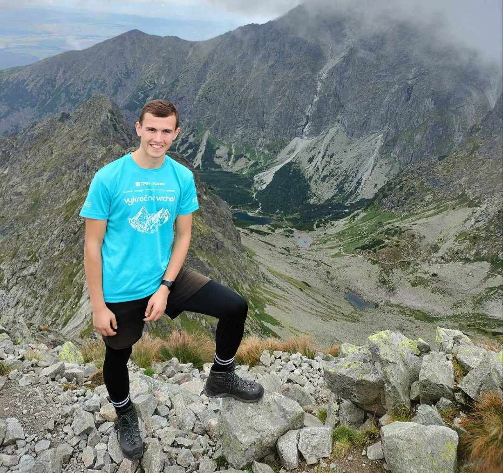
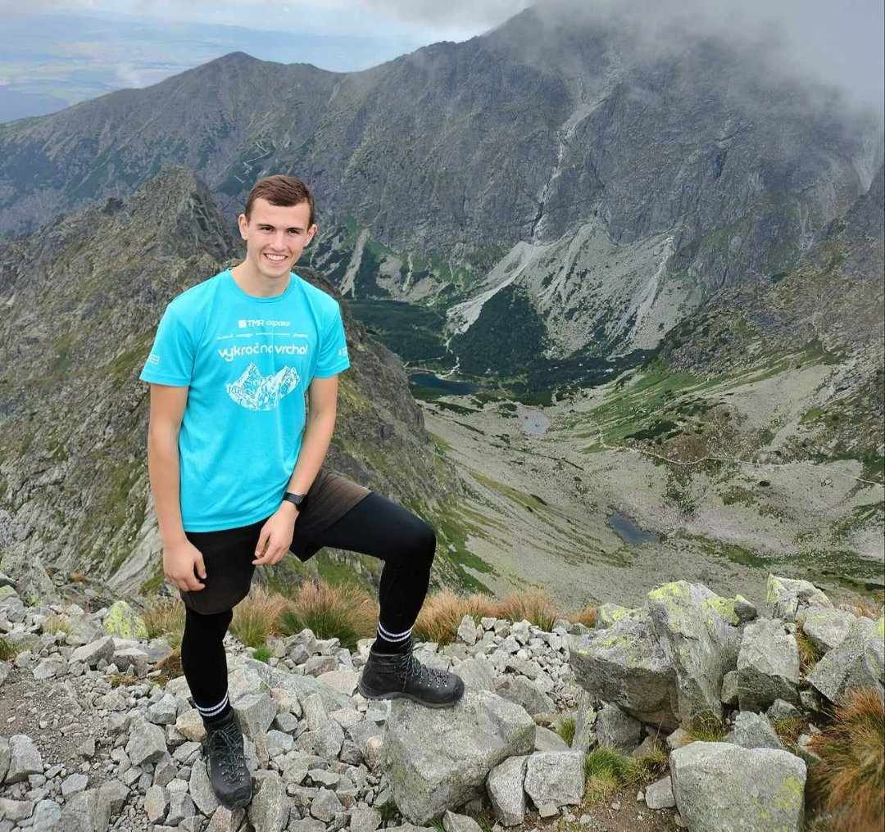

Samozrejme, môj voľný čas je pestrý a plný rôznorodých záľub. Najväčia z mojich vášní je turistiku, kde môžem uniknúť každodennému ruchu a ponořiť sa do krás prírody. Je to pre mňa spôsob, ako načerpať energiu a objavovať nové miesta.
Hudba zohráva tiež dôležitú úlohu v mojom živote. Pocit, keď sa ponorím do melódie, je nezameniteľný, a často mi pomáha relaxovať a zrelaxovať sa po náročnom dni. Rôzne hudobné žánre a interpreti ma stále fascinujú.
Okrem toho pravidelne navštevujem posilňovňu, kde sa venujem fyzickej kondícii a silovému tréningu. Je to pre mňa nielen cesta k lepšiemu zdraviu, ale aj spôsob, ako sa odreagovať a uvoľniť stres.
A potom je tu programovanie, ktoré považujem za skutočnú výzvu a vášeň. Tvorenie nových projektov a riešenie komplexných problémov v digitálnom svete ma fascinuje. Je to pre mňa nielen zábava, ale aj príležitosť rozvíjať svoje kreatívne myslenie a technologické zručnosti.
 
